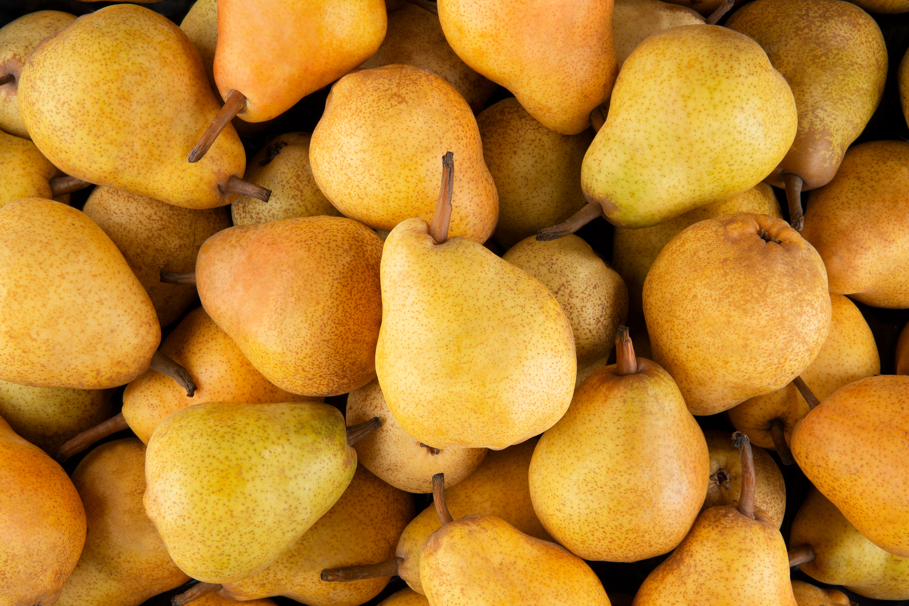

A körte a rózsavirágúak rendjébe és a rózsafélék családjába tartozó
növénynemzetség. Kb. 30 főbb faja, nagyobb alfaja és természetben előforduló hibridje létezik.
Számos ehető/iható gyümölcsű fafaj tartozik ide. Az emberiség legalább 3000 éve ismeri, termeszti és
fogyasztja. A körte tökéletes
alapanyaga a gyógyvíznek (pálinka).